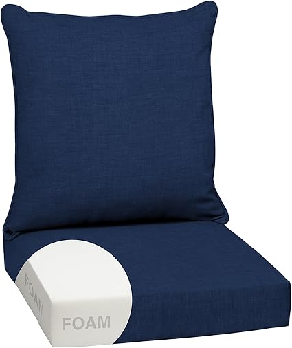
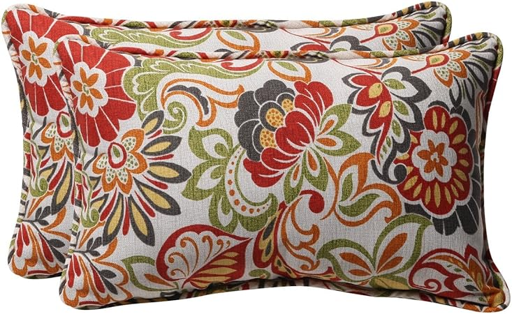

May 2026
We've spent serious time comparing outdoorseatingcushion. Some impressed us, some didn't, and a few genuinely surprised us.
Overbuying features — Most people use 20% of high-end outdoorseatingcushion features. Don't pay for what you'll never touch.
Trusting fake reviews — Look for reviews with photos and specific details. Generic praise is often planted.
Ignoring the fine print — Some outdoorseatingcushion listings look great until you realize key parts are sold separately.

#4 — IPYNBAP Outdoor Chair Cushions Set of 4 Waterproof Outdoor Seat Cushions Pa — Consistently rated
#5 — Outdoor Chair Cushions 6 inch Thick Seat Cushion for Outdoor Furniture Wate — Great valueThe outdoorseatingcushion space keeps improving, and 2026 is a solid time to buy. See our full rankings at outdoorseatingcushion.com for side-by-side comparisons.